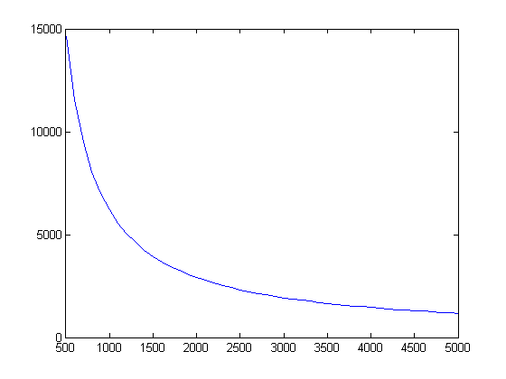

Exercise 1 - Load Function
Contents
1.1-2 Write the file (see loanPayments.m)
1.3 Calculate and plot the total interest paid for a loan:
A) Principal of $50,000 B) Interest rate of 0.05/12 C) Monthly payment amounts of $500-$5000
A = 50000; r = 0.05/12; P = 500:100:5000; [N,T] = loanPayments(r,A,P); plot(P,T)